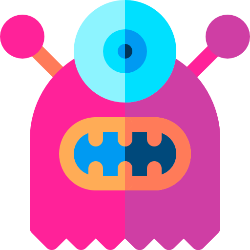

USER'S OPINIONS
This is truly a great website, very detailed analytics with useful information that I considered helpful. Hope this site gets more followers to expand our knowledge even further.

JAY QUELINE
Co-Founder at #####
⏁⊑⟟⌇ ⟟⌇ ⏁⍀⎍⌰⊬ ⏃ ☌⍀⟒⏃⏁ ⍙⟒⏚⌇⟟⏁⟒, ⎐⟒⍀⊬ ⎅⟒⏁⏃⟟⌰⟒⎅ ⏃⋏⏃⌰⊬⏁⟟☊⌇ ⍙⟟⏁⊑ ⎍⌇⟒⎎⎍⌰ ⟟⋏⎎⍜⍀⋔⏃⏁⟟⍜⋏ ⏁⊑⏃⏁ ⟟ ☊⍜⋏⌇⟟⎅⟒⍀⟒⎅ ⊑⟒⌰⌿⎎⎍⌰. ⊑⍜⌿⟒ ⏁⊑⟟⌇ ⌇⟟⏁⟒ ☌⟒⏁⌇ ⋔⍜⍀⟒ ⎎⍜⌰⌰⍜⍙⟒⍀⌇ ⏁⍜ ⟒⌖⌿⏃⋏⎅ ⍜⎍⍀ ☍⋏⍜⍙⌰⟒⎅☌⟒ ⟒⎐⟒⋏ ⎎⎍⍀⏁⊑⟒⍀.
⋔⏃⍀☍ ⋉⎍☍⟒⍀⏚⎍☌⟒⍀
Co-Founder at #####
FIND US ON SOCIAL MEDIA